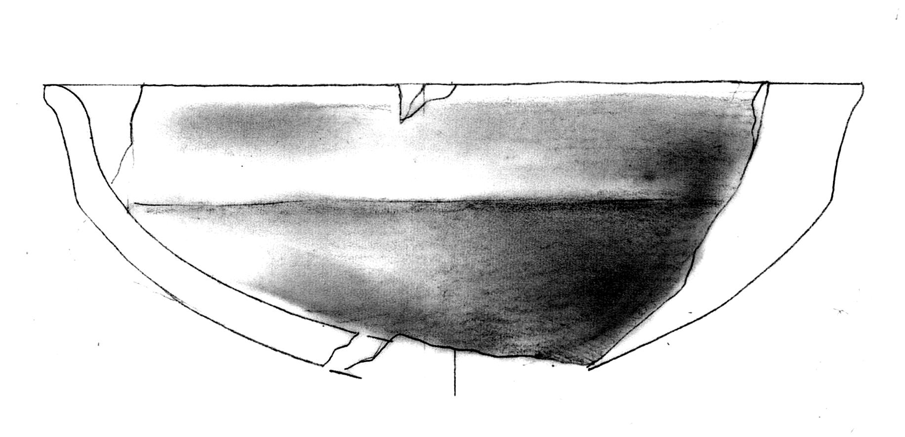
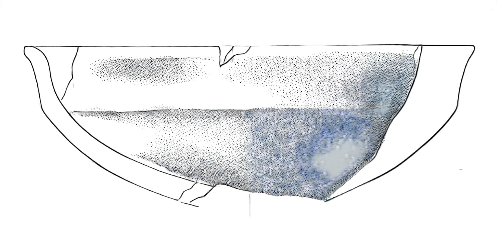
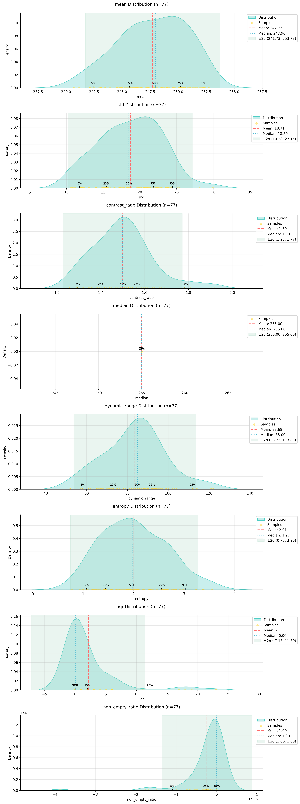
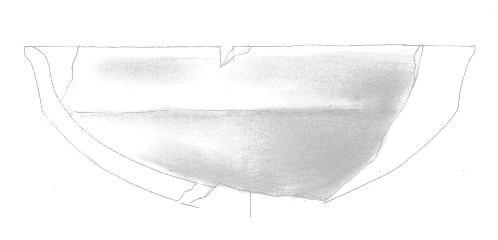
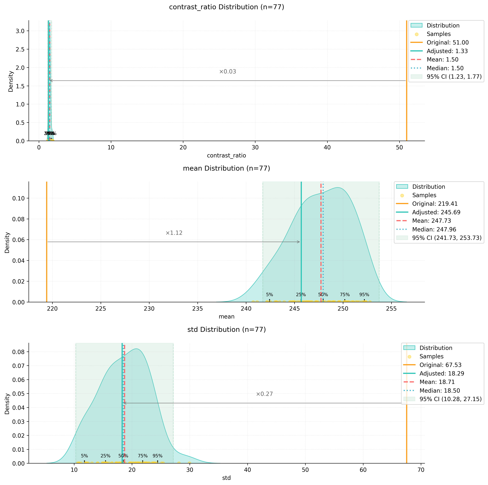

from ink import process_folder, process_single_image
from utils import DatasetAnalyzer, process_image_metrics,
visualize_metrics_change, process_folder_metricsPyPotteryLens: Preprocessing Pipeline Documentation
Introduction to Image Preprocessing
Archaeological drawings often vary in their characteristics due to different artists, scanning conditions, and original materials. These variations can impact the performance of the model. This guide outlines the preprocessing pipeline that helps standardise images before they are processed by the model.
Import Required Libraries
Understanding the Problem: Image Metric Variations
Let’s examine a specific case that illustrates why preprocessing is necessary. Consider the following high-contrast image (Figure 1).

When we apply our model directly to this image without preprocessing, we get problematic results (Figure 2):

The output shows two significant issues:
- Missing dot patterns in shaded areas
- Unwanted blue tiling artefacts, particularly visible in the bottom-right section
These issues arise because the input image’s characteristics deviate significantly from the training dataset’s standard properties. Our preprocessing pipeline addresses this by analysing and adjusting key image metrics to align them with our training data distribution.
Image Metrics Analysis
The DatasetAnalyzer class calculates eight key metrics that characterise archaeological drawings:
- Mean brightness: Overall lightness of the image
- Standard deviation: Measure of tonal variation
- Contrast ratio: Ratio between the brightest and darkest areas
- Median: Middle intensity value
- Dynamic range: Difference between the 99th and 1st percentile intensities
- Entropy: Measure of information content
- IQR (Interquartile Range): Spread of middle 50% of intensity values
- Non-empty ratio: Proportion of pixels above background threshold
You can either analyse your own dataset to establish reference metrics or use our pre-computed metrics from the training dataset:
# Option 1: Analyse your own dataset
analyzer = DatasetAnalyzer()
model_stats = analyzer.analyze_dataset('PATH_TO_YOUR_DATASET')
analyzer.save_analysis('DATASET_RESULTS_PATH')
# Option 2: Use pre-computed metrics
analyzer = DatasetAnalyzer()
analyzer = analyzer.load_analysis('Montale_stats.npy')
model_stats = analyzer.distributionsThe distribution of these metrics can be visualized:
analyzer.visualize_distributions_kde()

Preprocessing Pipeline
The preprocessing pipeline adjusts images to match the statistical properties of the training dataset. Here’s how to process a single image:
original_image = 'PATH_TO_YOUR_IMAGE'
adjusted_image, adjusted_metrics = process_image_metrics(original_image, model_stats)The pipeline performs these adjustments:
- Contrast normalization based on the training set’s contrast ratio distribution
- Dynamic range adjustment to match the target range
- Brightness correction to align with the training set’s mean intensity
The adjusted image shows more balanced contrast and better preservation of details:

We can visualize how the preprocessing affected our image metrics:

Model Application
After preprocessing, the model produces significantly better results:

The improvements include:
- Consistent dotting patterns in shaded areas
- No colour artefacts or tiling effects
- Better preservation of fine details
- More natural transition between different tonal areas
I’ll add a section about batch processing to the documentation:
Batch Processing
While processing individual images is useful for testing and fine-tuning parameters, in archaeological practice we often need to process entire collections of drawings. The process_folder_metrics function automates this task by applying our preprocessing pipeline to all images in a directory.
Here’s how to use batch processing:
# Define the input folder containing your drawings
input_folder = "path/to/your/drawings"
# Process all images in the folder
process_folder_metrics(
input_folder=input_folder,
model_stats=model_stats,
file_extensions=('.jpg', '.jpeg', '.png') # Supported file formats
)The function creates a new directory named input_folder_adjusted that contains all the processed images. During processing, it provides detailed feedback about each image:
📁 Found 25 images to process
==================================================
🔍 Analyzing: drawing_001.jpg
⚙️ Image Analysis:
└─ Contrast: 0.85x | Brightness adjustment needed
✨ Adjustments applied
Progress: 1/25
--------------------------------------------------
🔍 Analyzing: drawing_002.jpg
✅ Image metrics within normal ranges
Progress: 2/25
--------------------------------------------------At the end of processing, you’ll receive a summary report:
📊 Processing Summary
==================================================
Total processed: 25
Images adjusted: 18
No adjustments: 7
💾 All images saved to: path/to/your/drawings_adjustedThis summary helps you understand how many images required adjustment, which can be useful for:
- Identifying systematic issues in your drawing or scanning process
- Planning future preprocessing strategies
- Documenting the processing pipeline for publication
The batch processing maintains all the benefits of individual processing while saving time and ensuring consistency across your entire dataset. All adjusted images will have metrics that align with your training data distribution, leading to better results when applying the model.
Note that each image still receives individual analysis and custom adjustments - the batch process doesn’t apply a one-size-fits-all transformation. Instead, it analyses each drawing’s specific characteristics and applies the precise adjustments needed to bring that particular image into alignment with your target metrics.